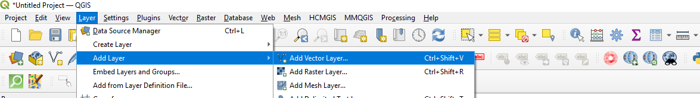
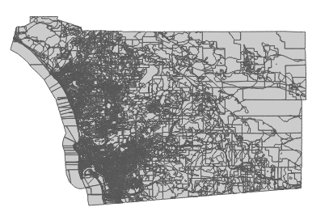
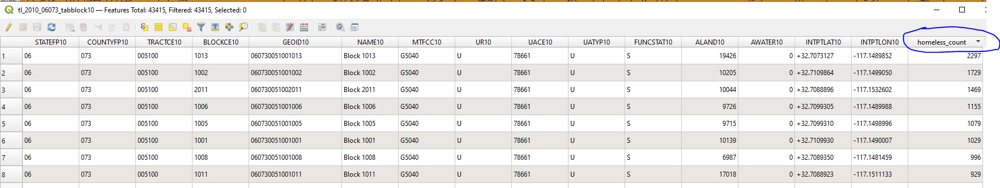
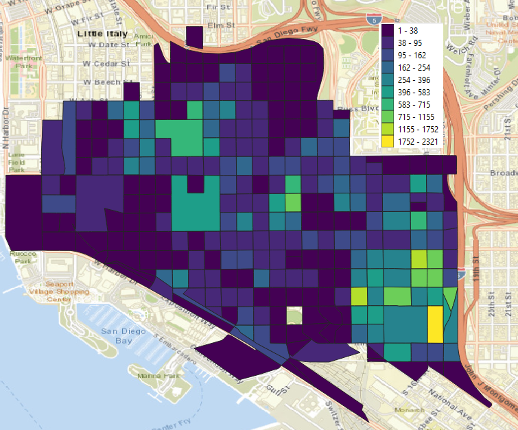
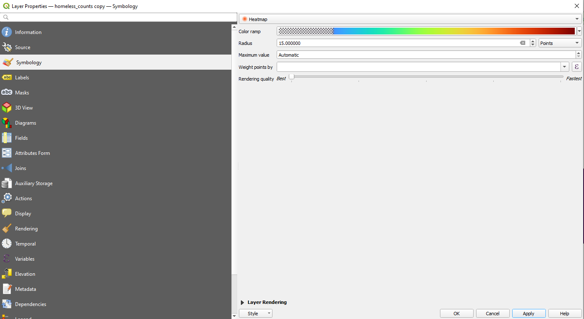
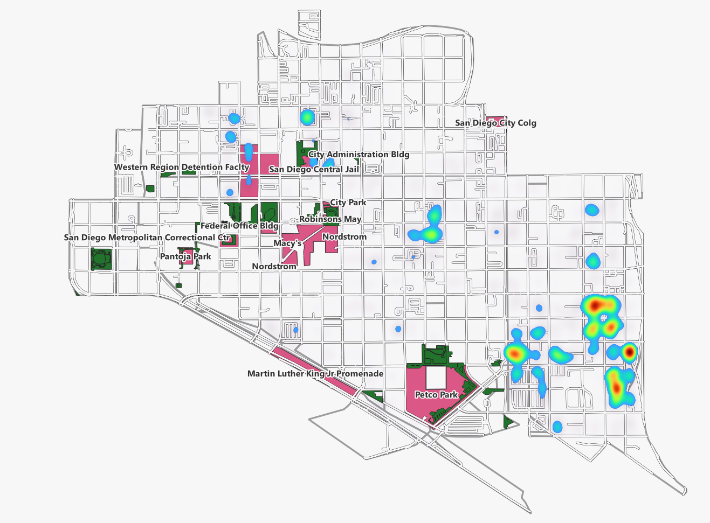

Mapping homelessness in San Diego
- Recall Day 1 we downloaded the data for homelessness in San Diego. Now we can map it.
- We are going to merge the count of homeless persons by block group that we created for Day 1. See San Diego Regional Data Library data example to refresh your memory on how we did this.
- Download the shapefile for San Diego blocks for the year 2010 (why 2010 versus 2020?). You can download that at TIGER/Line Shapefiles (census.gov) Unzip the files to your hard drive. You will see multiple files in the folder you just unzipped. We will review them now.
- Open QGIS. From the file menu select Layer --> Add Layer --> add Vector Layer as shown below.

- Browse to the folder you just downloaded and select tl_2010_06073_tabblock10.shp. You can also open the file from the folder ex/homeless data that has been provided to you
- You should see something that looks like the image below. The shape of the map is San Diego county and the boundaries contained therein represent census blocks in the county.

- Recall in Day 2 we learned that in order to merge files there needs to be a unique key. We also learned during Day 1 that Excel formulas are handy for data wrangling. We need to create a one-to-one correspondence between our census block groups and our homeless counts.
- Take a look at the two datasets. It is clear that the field linking the two is geoid. Unfortunately, we need to remove the first 7 characters from our data file before the merge will be successful. See Understanding Geographic Identifiers (GEOIDs) (census.gov) for an in-depth explanation of the geographic identifiers contained in Census data.
- We will create a new variable called GEOID10 (why?) that has the unique census block ID for each census block in the downtown area
- Now the data are merged and can be mapped!

- Compare the map below to the one on the website. They look identical!

- Let's incorporate more data into the map
- Download the landmark dataset
- Clip the landmark dataset to the downtown area
- Add OpenStreetMap data
- Make a heatmap

- Make some observations
